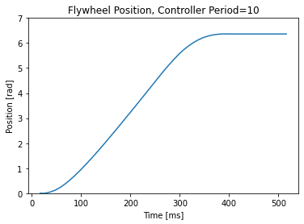
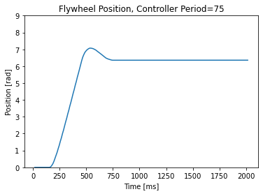
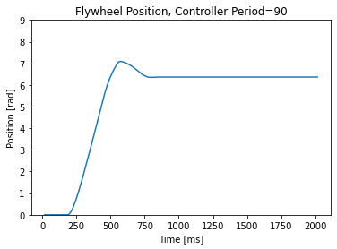
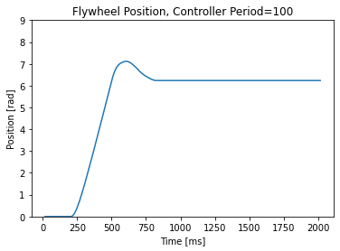
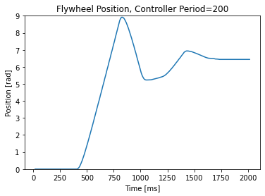

- Generated by
 1.9.2
1.9.2
|
ME 405: Lab 3
Multitasking
|
This exercise involved utilizing our motor driver, encoder driver, and closed loop controller. This involved creating seperate tasks for these, and assigning appropriate priorities and periods (sampling rates) for each task. This involved utilizing the files cotask.py, task_share.py, and basic_tasks.py from the ME405 support repository towards implementing our multitasking regime. basic_tasks.py served as a template towards creating our main.py in terms of implementing the tasks and sending data over serial. It is necessary to perform multitasking in order to control the position of more than one motor. A real-time scheduler is necessary in order to control the position of multiple motors with their corresponding encoders and closed-loop controllers. The period of the motor and encoder tasks were set to 10 ms, however the motor had a priority of 1, and the encoder had a priority of 2. The controller period is set by the user, and the step response results are shown below in Figures 1-5.
Cotask.py contains two necessary classes which are instrumental towards task management. One class is called Task. This class initializes a user created task by assigning the name, priority, period, profile, and trace. There are several methods which we used in particular. The .schedule() method sees if the task is ready to run and if so, works through the profile and trace methods. If not, it goes to the next text the .get_trace() method uses the trace parameter within the initialization to determine the time and states from which the system transitions. The other class is called the TaskList. This task holds the list of tasks that is run by the task scheduler and appends these to a list based on priority. pri_sched() runs these tasks according to priorities.
This contains the classes which allow the tasks to share data so that it does not get corrupted due to interrupts. The central class is BaseShare which works with queues and shares that work between tasks. The Queue class is used to arrange a queue of data to share between tasks. The put() method puts an item in the queue and if the queue is full, it waits until there is room before filling the queue more. The queue is buffered. Queues are useful for sending byte arrays. The data from the queue is processed in a First In First Out method (FIFO), where the oldest (first) entry is processed first. The get() method reads the item from the queue. There is a num_in() method to check how many items are in the queue. The Share class is more conditioned for an item by item basis rather than a byte array. It also has the put() and get() methods just like the Queues class.
Our results here were using the flywheel within our multitasking regime. This shows the effect of different user defined periods for the motor controller on the step response. This is a test, are images working. added jpeg 
Figure 1: Step response with a controller period of 10 ms.
The fast sampling rate yields an excellent plot with a minimal steady state error.

Figure 2: Step response with a controller period of 75 ms.
The larger controller period still yields decent results with small overshoot. This is an acceptable run rate for the motor control task. It should be slightly faster than the slowest rate.

Figure 3: Step response with a controller period of 90 ms.
The overshoot becomes less continuous then smaller periods, this is less than ideal for a run rate.

Figure 4: Step response with a controller period of 100 ms.
The overshoot is larger than in previous periods. This is not useful.

Figure 5: Step response with a controller period of 200 ms.
There is significant overshoot, with two peaks by running the controller this slow. This is unacceptable, and is too slow for motor control implementations.
This section is to be completed in the near future. We ran into difficulties within our queues and shares when attempting to run tasks for an additional motor, encoder, and controller. When running two motors, we expect that the tasks will need to be run at faster periods in order to yield acceptable results.